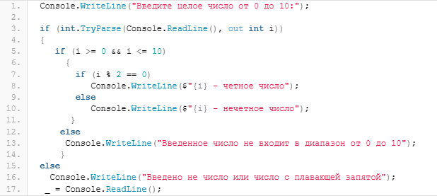
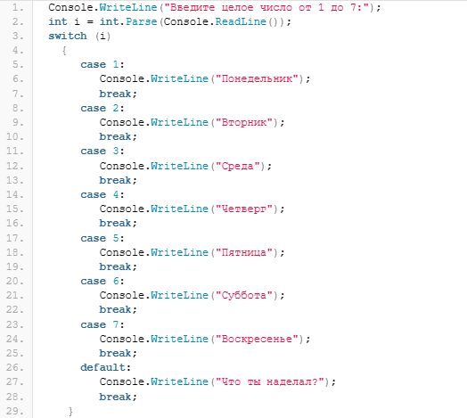
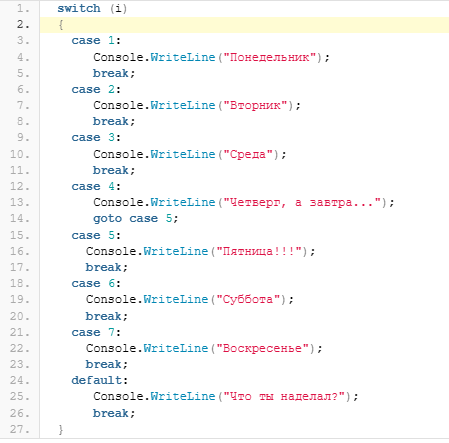
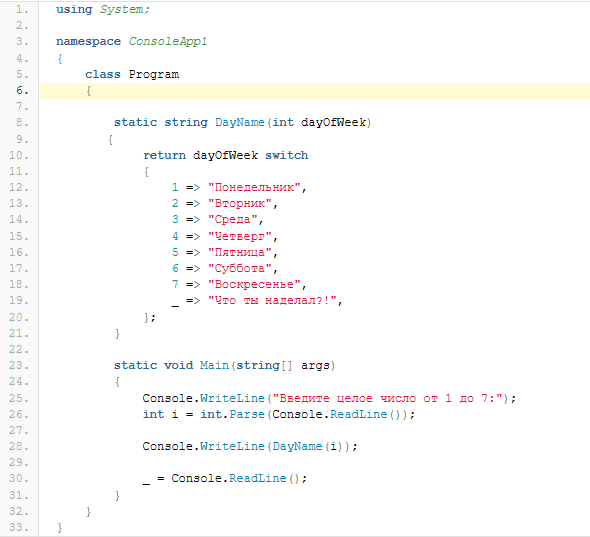
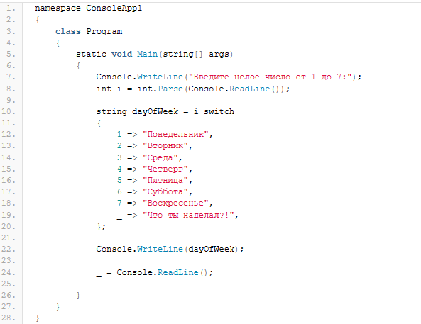

Логические операции в C#
Содержание
Программы с линейным выполнением ряда операций встречаются довольно редко. Чаще всего в программе присутствует какая-то «логика», то есть программа выполняет какие-либо операции в зависимости от того, какие действия производит пользователь. Например, если вы пробуете задать недопустимое значение в программе, то вряд ли это действие серьезно отразиться на работоспособности вашего компьютера, скорее всего программа выдаст вам сообщение о том, что введенное значение некорректно и требуется повторить ввод. Все логические операции связаны с логическим типом bool и, соответственно, результатом выполнения той или иной логической операции может быть только true (истина) или false (ложь). Для того, чтобы выстроить логику программы, в C#, как и в других языках программирования, используются логические операции или, как их ещё называют, логические конструкции о которых мы сегодня и поговорим.
Начнем с самого простого — условного оператора if. В общем случае, этот оператор выглядит следующим образом:
if (Условие)
Действие 1;
else
Действие 2;
Дословно этот оператор можно описать так: если выполняется Условие, то необходимо выполнить Действие 1, иначе (если Условие не выполняется), то выполнить Действие 2. На что здесь необходимо обратить внимание. Во-первых, Условие обязательно заключается в круглые скобки. Немного раздражало после Delphi, но, в принципе, довольно быстро привыкаешь где надо «на автомате» расставлять скобки. Во-вторых, после Действия 1 обязательно ставится точка с запятой. Если необходимо выполнить несколько действие, то, соответственно, эти действия заключаются в фигурный скобки. Так же, как и в Delphi, ключевое слово else может отсутствовать, если не требуется выполнять никаких действий в случае, если Условие вернет false.
Рассмотрим несколько примеров использования условного оператора if, используя те знания, которые у нас уже есть на данный момент. Например, пусть пользователь задаст любое число от 0 до 10 и наша программа, в зависимости от того чётное это число или не четное, либо увеличит число на 1, либо, наоборот — уменьшит. Ещё со школьной скамьи мы знаем, что чётное число — это число, которое делится без остатка на 2. Про ноль, конечно, есть вопросы, но будем считать, что ноль — тоже чётное число. Программу можно представить следующим образом:
Console.WriteLine("Введите число от 0 до 10:");
int i = int.Parse(Console.ReadLine());
if (i % 2 == 0)
Console.WriteLine($"{i} - четное число");
else
Console.WriteLine($"{i} - нечетное число");
Console.ReadLine();
Раздерем эту программу построчно. Вначале, мы предлагаем пользователю ввести какое-либо число:
Console.WriteLine("Введите число от 0 до 10:");
Далее идёт строка в которой мы объявляем переменную i и тут же её инициализируем для чего конвертируем строку, которую ввел пользователь, в целое число, то есть выполняем сразу три действия:
- объявляем переменную i int i
- читаем из консоли строку, которую ввел пользователь: Console.ReadLine()
- конвертируем строку в целочисленный тип int: int.Parse(Console.ReadLine())
Далее идет наш условный оператор if в котором мы проверяем остаток от деления, воспользовавшись соответствующим арифметическим оператором %. Если условие истинно, то выводим строку, что число является чётным, иначе — что число является не четным.
Последняя строка — просто «заглушка» для того, чтобы окно консоли не закрывалось до тех пор, пока пользователь не нажмет ввод. Используя знания по переменным в C# эту строку можно было бы написать так:
_ = Console.ReadLine();
Теперь можно запустить программу, нажав F5 и посмотреть на результат, например:
Введите число от 0 до 10:
6
6 — четное число
Конечно, приведенный выше код программы — это только демонстрация работы оператора if и при разработке реального проекта у опытного программиста к этому коду возникло бы сразу масса вопросов, например, почему программа не проверяет, что число действительно находится в пределах от 0 до 10, а не больше или меньше предельных значений? Или почему не проводится проверка на то, что пользователь ввел именно число, а не символ или вообще строку? Про обработку ошибок мы ещё поговорим, а пока попробуем доработать наш код и снять приведенные выше вопросы используя только условный оператор if.

Здесь мы уже воспользовались методом TryParse(), который возвращает true, если удалось преобразовать строку в целое число и false в противном случае. Если пользователь ввел именно число, то далее идёт проверка на вхождение числа в диапазон от 0 до 10 и, если это условие оказалось истиной (true), то проводится проверка числа на чётность. Конечно, и эту программу можно улучшать, но мы этого сегодня делать не будем, а лучше рассмотрим ещё один условный оператор C# — switch.
Дословно цитируя документацию по языку C#, switch— это оператор выбора, который выбирает для выполнения один раздел switch из списка кандидатов, сравнивая их с выражением соответствия. Этот оператор часто используется вместо оператора if, когда требуется проверить более трех условий.
Оператор switch в C# выглядит следующим образом:
switch (переменная)
{
case Значение_1:
Действия;
break (goto, return);
case Значение_2:
Действия;
break (goto, return);
case Значение_2:
Действия;
break (goto, return);
default:
Действие_по_умолчанию;
break;
}
Опять же на что обратить внимание. После ключевого слова switch в круглых скобках указывается переменная, которая будет сравниваться со значениями (напротив ключевого слова case) и в зависимости от результата сравнения выполнять действия. Если же не одно значение переменной не подойдет ни под один case — выполнится действие по умолчанию. Действие по умолчанию не является обязательным и может отсутствовать.
В конце каждого блока case устанавливается один из операторов перехода: break, goto или return. Наиболее часто при этом используется break — прервать дальнейшее выполнение действие в блоках case.
На первый взгляд switch выглядит немного запутанно по сравнению с аналогичным оператором case..of из Delphi, но, при детальном рассмотрении возможностей этого оператора становится понятно почему разработчики C# сделали именно такую конструкцию, а не другую.
Рассмотрим пример, когда использование оператора if не желательно так как приводит к усложнению восприятия исходного кода, а со switch код станет намного понятнее. Пусть наша программа будет выводить название дня недели по введенному пользователем числу от 1 до 7 где 1 — это понедельник, а 7, соответственно, воскресенье. Для экономии времени я упущу необходимые проверки того, что вводит пользователь в консоли и оставлю только оператор switch.

Теперь можете самостоятельно попробовать составить ту же самую программу, но только, используя оператор if и наглядно увидите, что switch делает код намного более читабельным. В приведенном примере мы использовали оператор перехода break. Посмотрим как внутри switch можно использовать оператор goto.

Обратите внимание на блок case 4 — здесь использован оператор перехода goto на блок case 5. Если пользователь вводит число 4, то программа вначале заходит в case 4, выводит строку с названием недели, затем, благодаря оператору goto переходит в case 5, снова выводит строку и уже в case 5 встречает оператор break и выходит за пределы оператора switch. Что касается оператора return, то он завершает выполнение метода, в котором он присутствует, и возвращает управление вызывавшему методу и в операторе switch используется реже, чем break и goto, поэтому пример с return рассматривать не будем, а лучше посмотрим на улучшенную версию switch, которая появилась в C# 8.0.
Начиная с версии C# 8.0 в языке появилось выражение switch. Выражения switch позволяют упростить код, который возвращает какое-либо значение. Чтобы было более понятно в чём суть введения в язык нового элемента составим нашу программу определения названий дней недели, используя выражение switch. Для начала приведу весь исходный код программы:

На что обратить внимание. Во-первых, мы создали отдельный метод DayName(), который возвращает название дня недели. В этом методе мы и используем выражение switch для возврата значения. Отличия выражение switch от одноименного условного оператора следующие:
- выражение возвращает значение, в то время, как оператор switch никакого значения может и не возвращать (см. примере в предыдущем разделе — там switch ничего не возвращал, а использовался только для вывода строки на экран.
- элементы case : заменены на более лаконичный и интуитивно понятный вариант =>
- в выражении ключевое слово switch стоит после переменной
- default заменено на пустую переменную _.
Может сложиться впечатление, что для использования выражения switch обязательно требуется писать отдельный метод. Совсем не обязательно — это просто я решал заодно показать для чего используется оператор перехода return, а вообще, можно было бы написать программу и так:

Тернарная операция (иногда говорят — сокращенная проверка) позволяет сократить исходный код программы с операторами if и сделать код более лаконичным и интуитивно понятным. Выглядит сокращенная проверка следующим образом:
Условие ? Действие1 : Действие2
Здесь все просто: вначале идет условие, истинность которого необходимо проверить. Если условие истинно (равно true), то выполняется Действие1, если условие ложно (равно false) — выполняется Действие2. Для примера, перепишем наш первый вариант программы проверки чисел на чётность. Вот как будет выглядеть программа с использованием тернарной операции:
Console.WriteLine("Введите число от 0 до 10:");
int i = int.Parse(Console.ReadLine());
//используем тернарную операцию break
Console.WriteLine((i % 2 == 0) ? $"{i} - четное число" : $"{i} - нечетное число");
_ = Console.ReadLine();
Теперь можете сравнить этот код с первой версией программы — с тернарной операцией код стал короче на 3 строки (было 7 строк, а стало — 4). Периодически Visual Studio сама предлагает упростить код и использовать тернарные операции, что делает работу с C# ещё удобнее и легче.
Сегодня мы вместе изучили какие условные конструкции могут использоваться в C# и как они работают, познакомились с выражениями switch, а также рассмотрели тернарные операции C#. Теперь наши программы могут использовать в работе «логику».